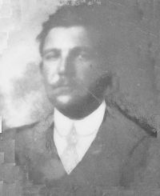
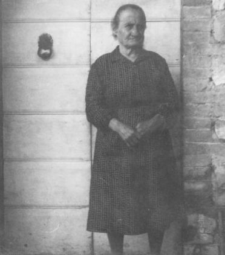
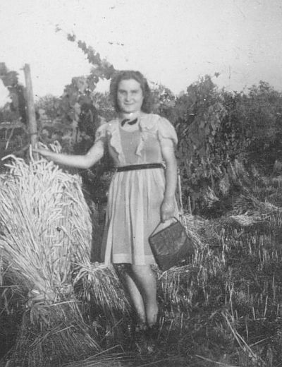

Quercegrossa (Ricordi e memorie)
CAPITOLO II - FAMIGLIE DEL '900
Indice dei Capitoli
Indice Famiglie del '900
RAGNI (? - 1923); fattori; Castellare.
Forse fu brevissima la permanenza al Castellare del fattore Olinto Ragni e della moglie Eletta Mariani prima di partire per Siena il 17 aprile 1923. Sarà poi sostituito dal Porciani alcuni mesi dopo.
RENZI (1887-1891) - (1899-1902); pigionali/mezzadri; Passeggeri.
I Renzi dimorarono in due riprese a Passeggeri dal 1887 al 1902. Abitavano in quella che era
una casa pigione dal 1887 al 1891 e vi fecero ritorno, nelle stesse abitazioni diventate poderali e dette Passeggeri 2°, nel marzo 1899. Accompagnavano il capoccio Francesco, già 50enne, la moglie Serafina Carapelli e i figli Giuseppe di 25 anni, Assunta di 21 e i più giovani Sabatino e Palmira. Partirono nel marzo 1902 senza lasciare registrazioni anagrafiche.
RICCUCCI (1928-1940); mezzadri; Magione/Castellare; da Lornano.
Provenienti da Lornano i Riccucci li troviamo al podere Magione nell'anno 1928 dove Elena di Giulio Riccucci sposa un Partini di Lornano. Tre anni dopo il 22 luglio 1931 all’età di 43 morì il capofamiglia dallo strano nome di Spirito. Da oltre mezzo secolo i Riccucci abitavano a Lornano, dapprima nel podere Colombaio dei Grottanelli e quindi al podere Chiostrino. Sei persone alla fine dell'Ottocento, dodici un ventennio più tardi grazie ai matrimoni di Giulio con Giulia Rustioni e di Spirito con Giuseppa Bruni di S. Leonino. All'avo Salvatore era succeduto come capoccio Francesco poi Spirito e infine Guido al Castellare. Il fratello Giulio si deve essere separato da Spirito negli anni Trenta. Dal 1935 i Riccucci sono registrati in otto al Castellare, dove rimasero fino al 1940. Quindi Magione e Castellare i due poderi lavorati da questa famiglia di coloni nei circa quindici anni che restarono nel nostro popolo prima di trasferirsi alle Quattrovie nel marzo del 1940, probabilmente al posto dei Losi. Insieme a Guido (1914), capoccio al Castellare, vivono anche la sorella Elia del 1922 e lo zio Enrico fu Francesco del 1885, e i cugini Gina (1916) ed Ettore (1919) figli del fu Giuseppe. Nel 1939 a Guido nasce una figlia. Si era sposato nel 1938 con Annita (Ginetta) Nucci del Casalino. Da segnalare inoltre lo sposalizio di Ettore con Primetta Bruttini del Mulinuzzo nel 1940, all'epoca in cui avevano già lasciato il Castellare, e il precedente della sorella Gina con un Giachini di S. Leonino nel 1936.
RIVERSI (1919 - Residenti); minatori/salariati; Leccino/Quercegrossa;
da Vagliagli.

"Un posso di nemmeno accidenti alla mi' mamma, perché un la conosco" si sfogava così Ruggero Riversi, nei momenti di sconforto. Ma anche se non la conobbe gli volle bene ugualmente perché "la invocò anche sul letto di morte". Ruggero Riversi era infatti un figlio dell'Ospedale di Siena; un esposto nato da mamma incognita. Poteva essere il figlio di un nobile, come gli diceva il Mosca, o di una povera famiglia che non poteva mantenerlo. Chissà? Era nato il 7 novembre 1885 e consegnato dieci giorni dopo all'Ospedalino di S. Sebastiano il 17 novembre 1885 alle ore 11,15 dalla levatrice Caterina Paluffi. Il 21 novembre è dato a balia a Palmira, moglie di Prospero Prosperanti (o Prosperi) del Comune di Gaiole. Venne lasciato "senza segnali" e questo significava senza ombra di dubbio che la mamma era fermamente convinta di non richiederne mai la restituzione. Comunque Ruggero rimase sempre presso i Prosperi a Pievasciata e li lasciò da adulto per vivere autonomamente quando si formò una famiglia. Da una nota sul Registro dell’Ospedale, alle "Osservazioni" leggiamo: "Li, 21 febbraio 1905, i tenutari premiati". Un premio in denaro per le famiglie che rallevavano un orfano per lungo tempo. Giunto all'età di 31 anni il bracciante Ruggero prese moglie. Sposò nella chiesa di Vagliagli la 22enne Eva Cappelli, nativa di Monteroni ma lì residente. Era il 23 aprile 1916. Doveva portare una bella pancetta sotto il vestito da sposa se il 9 giugno successivo alle 5,30 della mattina nasceva una bambina che chiamarono Bianca. Da questo atto di battesimo sappiamo che Ruggero è un bracciante e pigionale all'Uliviera. La bambina venne battezzata in casa dalla levatrice stante il pericolo di vita e "quindi portata alla chiesa per supplire alle cerimonie di rito". La nascita difficoltosa o altre complicazione portarono alla morte sia la bambina che la madre e Ruggero venne lasciato ancora una volta solo.

Emma Buriani, anziana, al Leccino.
C'erano in quel periodo molte donne vedove di guerra tra le quali Emma Buriani, vedova Donnini, di Quercegrossa, che abitava con la figlia Argia nelle case di Brunetto Rossi al Leccino. E così Ruggero ed Emma si misero insieme, forse nel 1919. Si sposarono solo in Chiesa, senza comunicazione al Comune, per non perdere la pensione di guerra di Emma e la loro unione non ebbe mai un momento di difficoltà, nonostante la quotidiana lotta per il pane. Ruggero accettò come propria la figlia di Emma, Argia, e "le volle bene più che a una figliola". D'altronde Ruggero come Emma erano persone che non avrebbero fatto male ad una mosca. Come operaio lavorò anche in miniera e nel 1921 a Quercegrossa è definito "esterno di miniera". Fu poi, e fino alla fine, alle dipendenze dei Bindi alla fattoria del Castellare per la quale svolgeva ogni sorta di lavoro: nei campi, nella fattoria e nei boschi, abbattendo alberi, ma "quando avevano preso il grano, l'olio e il vino per casa riscuoteva poco o niente". Dalla sua seconda moglie ebbe Rina il 6 aprile del 1921. Fu segnata come "figlia di ignoti" risultando la mamma Emma vedova e non risposata. Una situazione che si trascinerà negli anni causando non pochi problemi. A Rina seguirono Aldo nel 1923 e Iolanda nel 1930, nata all'ospedale di Siena.

Rina Riversi in Minghi"
Iolanda, conosciuta da tutti come Vaga, deve il doppio nome alla sua nascita all'ospedale. Tutti erano in attesa di lei e Argia fremeva e disse più volte a Ruggero, che si stava apprestando per Siena a prendere mamma e battezzare la figliola, di chiamarla Vaga. E a tutti anticipò che la cittina si chiamava Vaga. Ora, arrivato all'ospedale e al battesimo della figlia, Ruggero non ricordava il nome che Argia gli aveva suggerito. Pensa, pensa, niente da fare. Finì che la segnò Iolanda, come l'altra figlia che gli era morta di 12 giorni nel 1926. Ma quando tornò a Quercia la bambina era già per tutti Vaga, e così gli rimase questo nome fino ai giorni nostri. Tra Ruggero bracciante di fattoria, Emma che faceva "un camiciolo per un pane" e Rina che lavorava da apprendista sarta da Annita la vita scorreva dimessa e con pochi mezzi. Nel 1936 partì Argia, sposata con Emilio Mugnaini, conosciuto al tempo dell'Arginano, e successivamente il 28 ottobre 1944 lasciò la famiglia anche Rina moglie di Raffaello Minghi della Cappannnetta. Salpò anche Ruggero, per l'ultimo viaggio, l'11 dicembre del 1947. Aveva 62 anni. Emma gli sopravvisse di 31 anni fino al 24 dicembre 1978, morendo alla venerabile età di 91 anni: gli fecero il funerale il giorno di Natale. Anche Aldo si sposò. Prese in moglie Anna Masti di Casagrande di Petroio il 23 aprile del 1949 in quel doppio matrimonio fra le sorelle Masti. Aldo trovò lavoro in miniera per alcuni anni, poi ci si ammalò e da allora si adoperò in vari lavori. Dopo il 1962 tornano al Casalino, casieri del Cimarrosti, mentre Vaga, commessa a Siena dal 1964 presso lo Stiaccini, rimane con Emma al Leccino. Ad Aldo e Anna erano nati Pieraldo detto “Robi”, Emanuela e Tiziana. Nel 1964 si trasferiscono nella case di Calagna, quelle sopra il Bar. Da lì anni dopo partiranno i figlioli per seguire la loro strada e Aldo vi morirà nel 1992, mentre Rina era deceduta anni prima nel 1976 a soli 55 anni sempre a Quercegrossa. Iolanda detta Vaga prese per marito Giorgio Fanetti nel 1972 e rimase ancora per qualche tempo nella vecchia abitazione del Leccino prima di spostarsi alle Badesse. Da questo matrimonio nacque Chiara. Frattanto Anna Masti, la vedova di Aldo, continuò il suo cammino solitario e pieno di ricordi nell'appartamento di Casagrande di Quercegrossa dopo aver vissuto a Casagrande di Petroio dal 1935, quando vi era giunta fanciulla spensierata all'età di 13 anni.
Emma Buriani moglie di Ruggero con la piccola Argia e il bimbo, figli del primo marito.
|